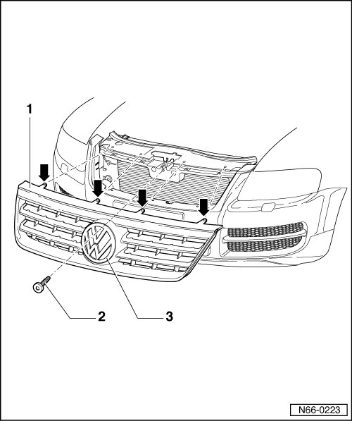
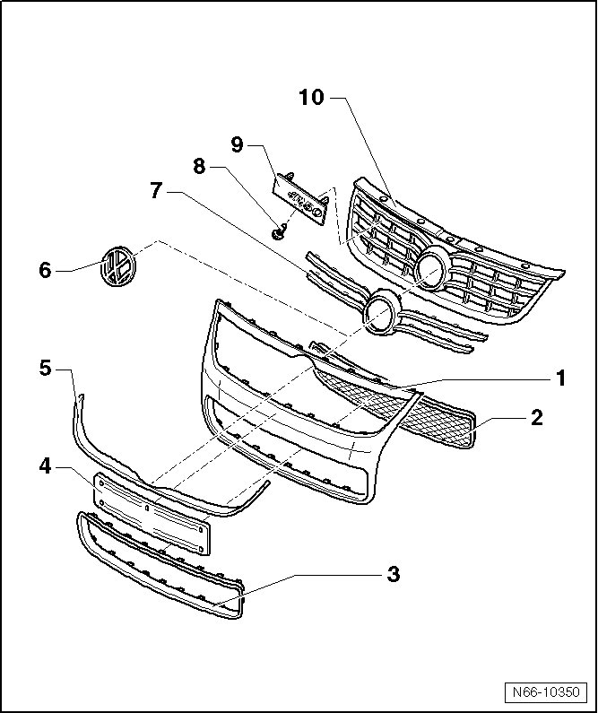

Radiator Grille Overview
Radiator Grille
--> [ Radiator Grille Assembly Overview, through 10.2006 ]
--> [ Radiator Grille Assembly Overview, from 11.2006 ]
Radiator Grille Assembly Overview, through 10.2006

1 Radiator grille
• Material - ASA
• Removing and Installing, refer to --> [ Radiator Grille, through 10.2006 ] Radiator Grille
2 Bolt
• 1.5 Nm
3 Emblem
• Clipped into radiator grille.
Radiator Grille Assembly Overview, from 11.2006

1 Radiator grille
• Removing and Installing, refer to --> [ Radiator Grille, from 11.2006 ] Radiator Grille
2 Vent grille
• Clipped into radiator grille.
• can be removed only when radiator grille is removed.
3 Lower chrome frame
• clipped into the radiator grille and glued
4 License plate holder
• Installing, refer to --> [ License Plate Holder, from 11.2006 ] Radiator Grille
• installing, USA, refer to --> [ License Plate Holder, USA, from 11.2006 ] Radiator Grille
5 Upper chrome frame
• clipped into the radiator grille and glued
6 Emblem
• Removing and Installing, refer to --> [ Emblem, from 11.2006 ] Radiator Grille
7 Chrome strip
• Clipped into radiator grille grating
8 Bolt
• 2 Nm
9 R50 name plate
• attached to the radiator grille with a screw - 8 -
• can be removed only when radiator grille is removed.
10 Radiator grille grating
• Clipped into radiator grille.
• Can be removed only when radiator grille is removed.